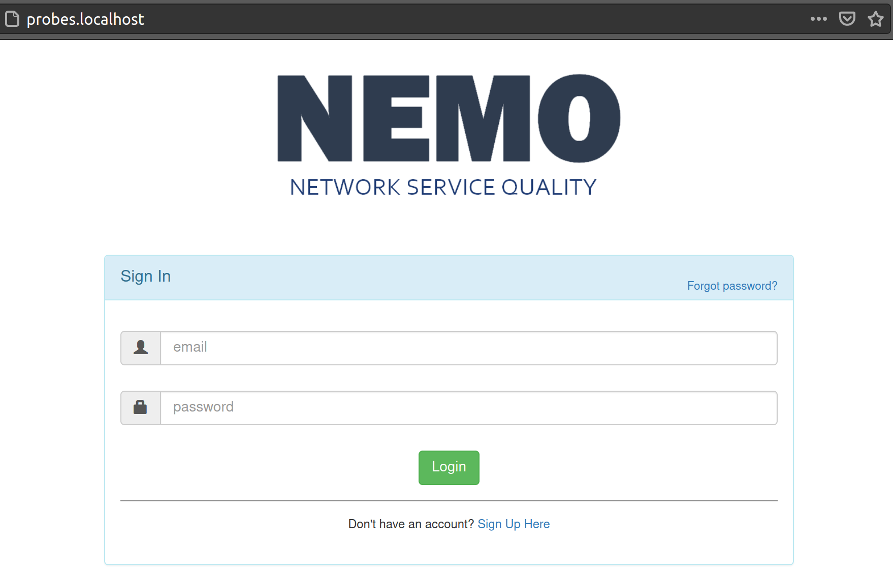
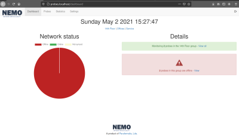

Download the code from github.
Place the contents of the downloaded folder on /var/www/probes.localhost or wherever you are going to serve your files from. You can delete the contents of the docs folder. That is only the files for how to you can get online (basically what you are reading right now).
Open the file application/config/database.php, scroll down and set yout localhost, username, password and database name. This is what you want it to be, you will setup all of this up later when the time comes to actually setup your database. You can leave the information as is if you like. The instructions that follow assume you made no changes to the information on this file. Be careful if you are going to run this on a production machine. You will want to change this information in that case.
Setup the server database:
1) Open a terminal window and enter mysql as root: "sudo mysql"
(you will have to create a new user and a new database).
2) CREATE DATABASE zodiak_app;
3) Now create a new user: CREATE USER 'zodiak_app'@'localhost' IDENTIFIED BY 'your_db_password';
4) GRANT ALL PRIVILEGES ON *.* TO 'zodiak_app'@'localhost'; //actually requesting access to all dbs.
You may want to limit this to only the database you just created.
5) FLUSH PRIVILEGES;
6) Copy the provided database to this new database you just created:
mysql -u zodiak_app -p -h localhost zodiak_app < /var/www/probes.localhost/zodiak_app.sql
Replace /var/www/probes.localhost/zodiak_app.sql with the path where you have the database file.
You should now be able to go to https://probes.localhost and should see the login form.

Enter "info@yourserver.com" as username and "test" as password to login. You should now be taken to the
dashboard which looks something like this:
